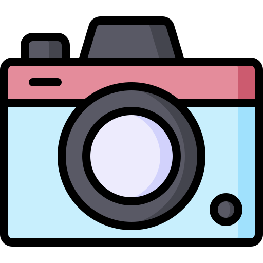
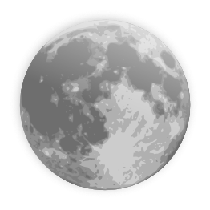

NUESTRA HISTORIA
Linea del tiempo
Agosto del 2022
Toda esta historia empezó con un hola, y empezamos a salir al día siguiente (gracias a la tablet de tu hermano)

Nuestras Primeras Cartas
Después llegaron la carta, tu escribiste una parte de la primera carta para que la leyera mi madre, intento leer la carta pero no le leyó bien

Nos sentiamos como si estuvieramos en una nuve
Era tan intensa nuestros sentimientos que los dos nos sentíamos como si estuviéramos en una nube muy alta del suelo y muy alejado de lo demás

Primer Aniversario
Aquella mañana del 17 de Septiembre estaba yendo al instituto nuevo, y te envíe aquel texto para nuestro primer aniversario

Los Amaneceres
Cada vez que veía un amanecer lo primero que hacía era hacerle una foto y enviártela, ya que todavía todos los atardeceres me recuerdan a ti, ya que lo que quiero es estar contigo viendo el atardecer

Viaje A Madrid
Era la primera vez que nos veíamos y jamás olvidaré de nuestro primer abrazo y nuestro primer beso y todos los momentos juntos que pasamos

Noche increible
Tampoco olvidaré la primera vez que fui a Alcalá, empezamos viendo el atardecer en el tren, y llegamos viendo la luna llena de aquella noche. Jamás olvidaré aquella noche en casa de tu abuela, no dormimos absolutamente nada

Primer Año juntos
Nuestro primer año juntos, sé que no fue bien y por mi culpa, pero el viaje salió genial, conocí a tu madre, a tu padrastro, y a tus tíos que son majísimos a casi toda la familia y salió genial

casa de mi abuela
Todavía me acuerdo cuando te presente a mi abuela, estaba muy tenso, pero al final les caíste genial a mis abuelos, siempre preguntan por ti, y que a ver si vienes

Navidad
Al fin llego el 24 de diciembre y cogí el ave para ir a verte, al llegar Madrid era un caos, pero estaba muy nervioso y muy ansioso por verte, era lo que más quería en ese momento por eso cogí rápido la Renfe para llegar y verte al fin
Fin de año Juntos
Jamás olvidaré el fin de año que pase en casa de tu abuela, tampoco olvidaré algunos chistes que contaba tu tío, y tampoco las llamadas que hacíamos a mis abuelas y a mis padres, pero sobre todo no me olvidaré del primer abrazo y del primer beso del año